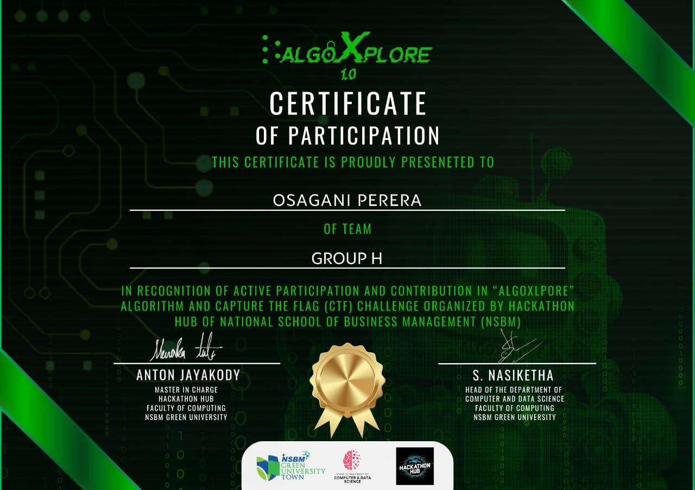

← Back to Portfolio
Participant — AlgoXplore CTF Inter-University Hackathon

Participated in AlgoXplore, a thrilling Capture The Flag (CTF) inter-university hackathon focused on cybersecurity, reverse engineering, and ethical hacking. Collaborated with teammates to tackle real-world security challenges in a competitive and time-bound environment.
🛡️ Hackathon Highlights:
- Solved CTF problems related to web security, cryptography, binary exploitation, and forensic analysis.
- Applied tools such as
Kali Linux, Burp Suite, and command-line utilities for network analysis.
- Strengthened skills in vulnerability scanning, payload creation, and exploit mitigation.
- Worked under pressure as a team, applying both offensive and defensive security techniques.
- Gained practical exposure to real-world threat modeling and cyber defense.